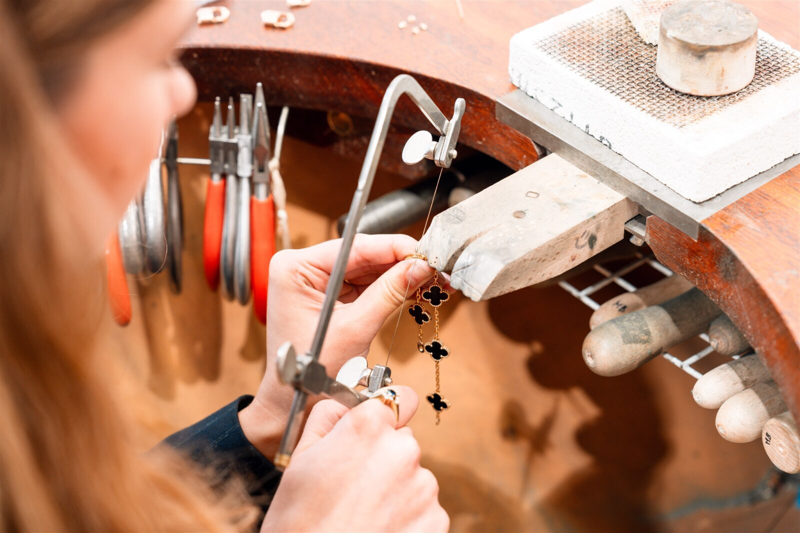
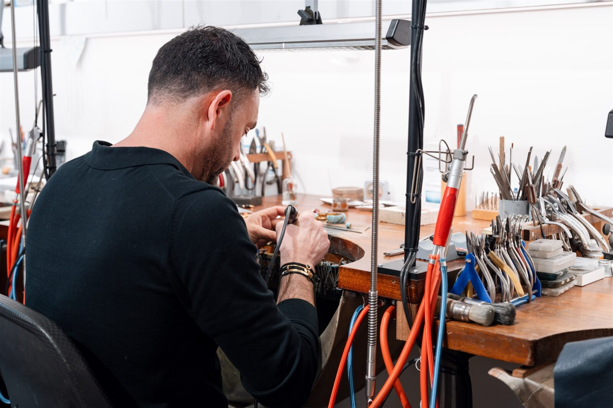

Reparatie van sieraden

Het herstellen van beschadigde juwelen
Sieraden kunnen door ongelukken of slijtage beschadigd raken. Onze ervaren goudsmeden behandelen een breed scala aan reparaties, waaronder het solderen van gebroken kettingen, het vervangen van verloren stenen, het herstellen van beschadigde ringen en meer. We gebruiken kwalitatieve materialen en geavanceerde technieken om de oorspronkelijke schoonheid en duurzaamheid te herstellen.

Jaarlijkse controle
Wij adviseren een jaarlijkse controle om onzichtbare slijtage op te sporen en ernstigere problemen te voorkomen. Ons team identificeert potentiele problemen zoals versleten schakels, niet-functionerende sluitingen of beschadigde zettingen. Zo voorkomt u onnodig verlies van waardevolle stenen of breuk.

Transparante werkwijze
Reparaties worden uitsluitend uitgevoerd na overleg. Wij geven u een transparante kostenopgave, zodat u volledig geinformeerd bent. Pas na uw goedkeuring gaan wij aan het werk.
Wat repareren wij?
- Gebroken kettingen en armbanden solderen
- Verloren of beschadigde stenen vervangen
- Ringen verkleinen of vergroten
- Sluitingen vervangen of herstellen
- Zettingen verstevigen
- Vergulden en rhodineren
- Gravures aanbrengen of herstellen